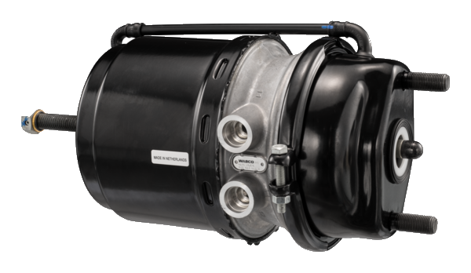
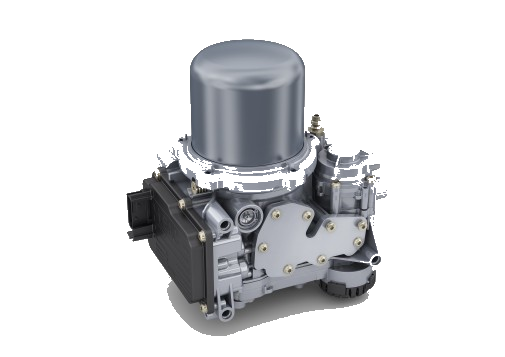

Tırların fren ve körük sistemlerinin revizyonu konusunda uzmanlaşmış firmamız, müşterilerimize en kaliteli hizmeti sunmayı amaçlamaktadır. Uzman ekibimiz, son teknoloji ekipmanlarla donatılmış özel atölyelerde, tırların fren ve körük sistemlerinin revizyon işlemlerini gerçekleştirerek müşterilerimizin güvenliğini sağlamaktadır.
Firmamızda yer alan deneyimli ve uzman kadromuz, tırların fren ve körük sistemleriyle ilgili tüm ihtiyaçlarınızı karşılamak için çalışmaktadır. Müşterilerimize sağladığımız hizmetler arasında fren ve körük sistemlerinin tamiri, bakımı, revizyonu, yedek parça tedariki ve montajı yer almaktadır.
Sunduğumuz hizmetlerle ilgili en son teknolojileri ve yenilikleri takip ederek, müşterilerimize en iyi hizmeti sunmayı hedefliyoruz. Tırların fren ve körük sistemleri konusundaki uzmanlığımız sayesinde, müşterilerimizin araçlarının güvenli ve sorunsuz bir şekilde çalışmasını sağlamak için elinden gelenin en iyisini yapmaktadır.
Müşteri memnuniyeti odaklı çalışmalarımız sayesinde, sektördeki lider konumumuzu koruyoruz.
Müşterilerimizin her zaman güvende ve memnun kalması için her zaman yanınızdayız.
Hizmetlerimizle ilgili daha fazla bilgi almak, fiyat teklifi almak veya randevu talebinde bulunmak için bizimle iletişime geçebilirsiniz.